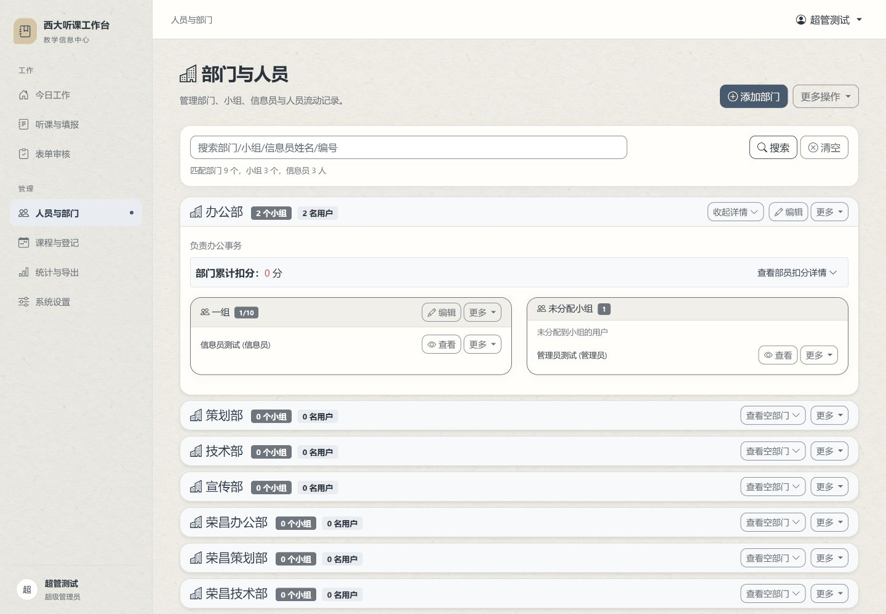
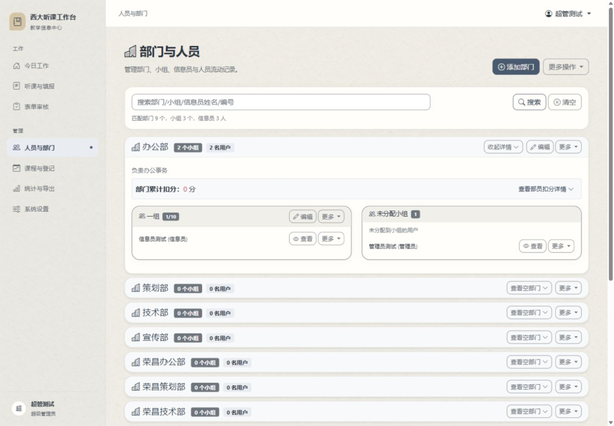

<!doctype html><meta charset="utf-8"><title>Paper texture comparison</title><style>*{box-sizing:border-box}body{margin:0;background:#ddd;font:16px sans-serif}main{display:grid;grid-template-columns:1fr 1fr;gap:12px;padding:12px}h2{font-size:16px;margin:0 0 8px}section{min-width:0}img{display:block;width:100%}.tile{height:380px;background-color:#f4f2ec;background-size:320px 320px;background-blend-mode:multiply;padding:28px;color:#29333e}.a{background-image:url(builtin-candidate.webp)}.b{background-image:url(web-candidate.webp)}article{margin-top:18px;background:#fffefa;border:1px solid #dcddd9;border-radius:18px;padding:20px}p{margin:6px 0 0;font-size:14px;color:#646c75}</style><main><section><h2>A · 内置生成 · 实际页面</h2></section><section><h2>B · ChatGPT 网页版 · 实际页面</h2></section><section><h2>A · 缩小平铺检查</h2><div class="tile a">人员与部门<p>背景细节、接缝与文字对照</p><article>办公部<p>内容表面保持干净，按钮和输入框不铺纹理。</p></article></div></section><section><h2>B · 缩小平铺检查</h2><div class="tile b">人员与部门<p>背景细节、接缝与文字对照</p><article>办公部<p>内容表面保持干净，按钮和输入框不铺纹理。</p></article></div></section></main>
